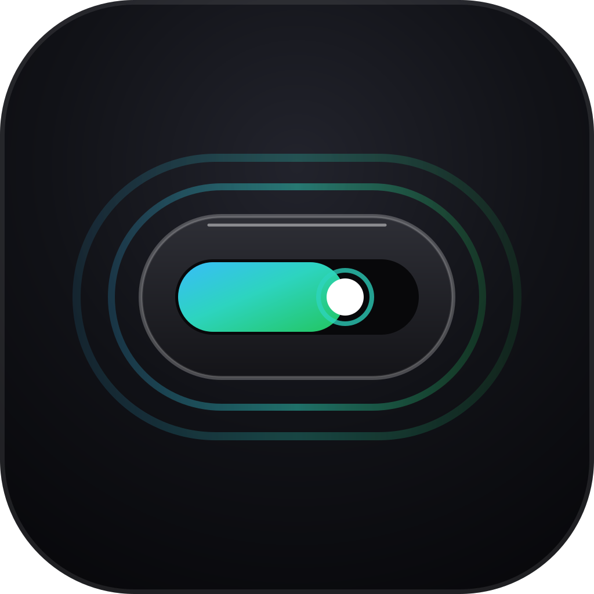

5h
31%4h 02m
收起态
260 × 44 像素，只显示当前最紧张的那一档。鼠标滚轮上下滑动秒切模块；不挡内容、不抢焦点、不出现在任务栏。

atollatoll 是钉在 Windows 屏幕顶部的灵动岛组件：智谱 GLM Coding Plan 的 5 小时与 7 天滚动用量、重置倒计时、限额告警，收进一颗 44 像素的药丸。
收起、展开、告警。窗口尺寸跟着内容走，位置你拖到哪它就在哪，永不回弹。
260 × 44 像素，只显示当前最紧张的那一档。鼠标滚轮上下滑动秒切模块；不挡内容、不抢焦点、不出现在任务栏。
鼠标悬停 250ms 即展开两档完整进度条、24h 趋势折线、速率预估与套餐档位。离开半秒后自动收回，防止误触抖动。
跨过阈值时整颗药丸变色，90% 以上开始呼吸脉冲。重置完成后走 Windows toast 提醒你已经恢复。
atoll 的名字来自环礁：主程序是礁盘，每个功能模块是礁盘上长出的一座小岛。新模块按「独立核心逻辑 + 独立药丸与面板」追加，互不污染。
直连智谱官方额度接口，读 5 小时与 7 天两个滚动窗口的已用百分比和下次重置时间。
工作阶段走完自动进休息，反向同理，每次切换发一条 toast。时长在设置里拖滑杆，5 到 60 分钟。
复制过的文本自动进历史，要找回来时搜一下、点一下就回到剪贴板。
默认 75% 琥珀留意、90% 红色告警并呼吸脉冲，两档阈值均可在设置中按个人习惯自由拖动调节。
正常
绿条，药丸保持默认底色
该留意
整颗药丸转琥珀色
要收着点
红色加呼吸脉冲
全屏自动隐藏。检测到前台窗口铺满显示器就让灵动岛消失，退出全屏自动回来。打游戏、看片、投屏演示时它不占位置。
贴顶自动微折叠。贴住屏幕顶边静止 3 秒后，隐入为一道 3px 霓虹流光线，移入即恢复；离顶边有间隙则视为有意悬浮，永不折叠（可在设置关闭）。
窗口永不丢失。无论拖出屏幕多少，松手后自动弹回完整可见；位置记忆带启动安全网。
不进任务栏，不抢焦点。无边框透明置顶窗口，平时只是屏幕顶部一条 44 像素的胶囊。
托盘控制与实时监控。想彻底藏起来，托盘菜单一键显示或隐藏，托盘图标本身也可以隐藏(设置中随时恢复)；鼠标悬停即可看实时用量与番茄倒计时，右键「关于」可查版本与作者。
拖到哪算哪。默认主显示器顶部居中，药丸或面板直接按住就能拖动，位置记在本地，下次启动回到原处。
主题与质感皮肤。浅色、深色、自动三档；内置黑曜石、深海蓝、极光紫、赤焰橙、薄荷绿、钛金金 6 款调优质感皮肤，强调色与微光实时联动。
开机自启。默认关闭，设置里一键打开。
API Key 存在本机应用数据目录，请求经 Rust 侧发出以绕开 WebView 的同源限制，域名白名单收紧到智谱两个站点。
内存是任务管理器「私有工作集」口径的实测值。Tauri 主进程约 30 MB，其余是 WebView2 多进程底噪，每个进程约 18 MB，空页面同理。
Windows 10 或 11，x64。WebView2 运行时（系统一般自带）。安装走 currentUser 模式，不需要管理员权限。
一个智谱开放平台的 API Key。团队版另需组织 ID。Key 只存在你本机。